戏妖
预告片：
戏妖作品简介
在《戏妖》的世界里，妖怪早已隐藏身份，作为普通人生活在人类社会之中。妖们各有所长，在人类世界也各有所用，他们兢兢业业地工作，依靠人类的关注获得维持人形的法力。时代发展带来境遇的此消彼长，有人因互联网而强大，也有人随着曾经熟悉的事物渐渐淡出视野，变得越来越虚弱。老蛙、小紫和鹦子，正是三只因戏曲气韵而生的“戏妖”。当戏台上的观众越来越少，他们也不得不走出生活已久的地方，寻找重新被看见的可能。
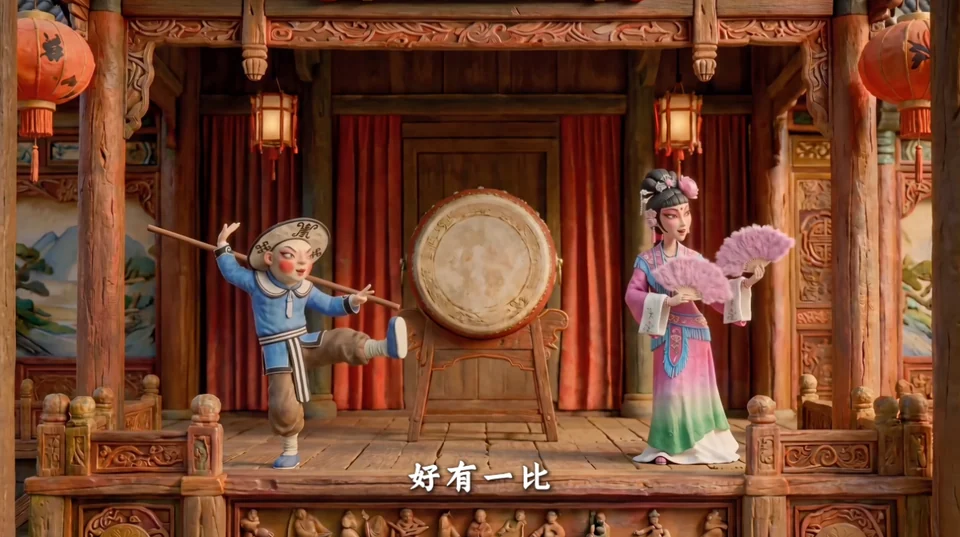
《戏妖》的故事始终围绕着一个关键设定：“关注度就是法力”。这个设定既带着现实世界的无奈又带着童话式的天真。热搜、短视频、直播、流量，每一天都有无数内容争夺我们的目光；而一门传统艺术能否继续拥有生命力，同样也离不开一代又一代新的观众。于是，《戏妖》的主创团队借三个有点笨拙、又很可爱的妖怪，聊一件他们真正关心的事：传统文化如何在今天焕发新的生机，重新进入人们的视野，并在新的时代里继续生长。这种“生长”也被放进了《戏妖》的角色关系里。守着规矩的老蛙、喜欢新鲜事物的小紫，以及嘴里藏着一支乐队、总想给传统戏曲加点新元素的鹦子，代表着几种完全不同的态度。他们没有急着给“传统”与“创新”一个标准答案，更希望让这些碰撞发生在一个轻松、有趣的故事中一起往前走，一起去探索，一起去创造。
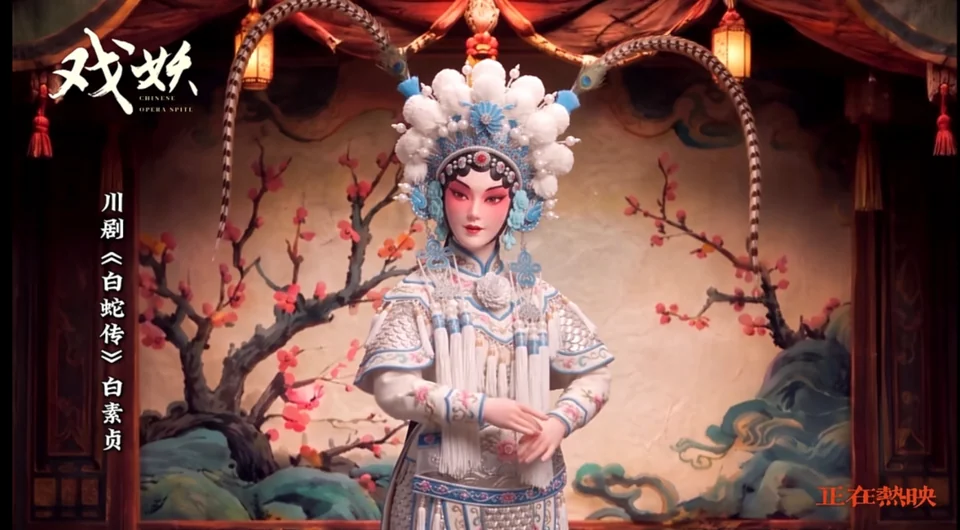
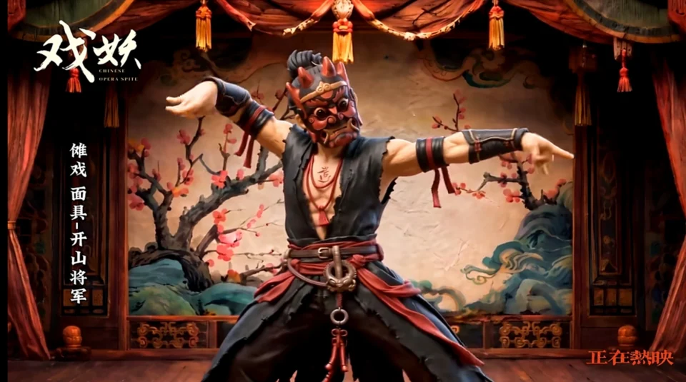
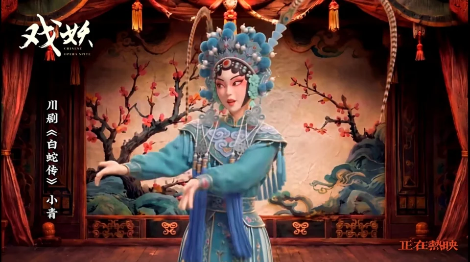
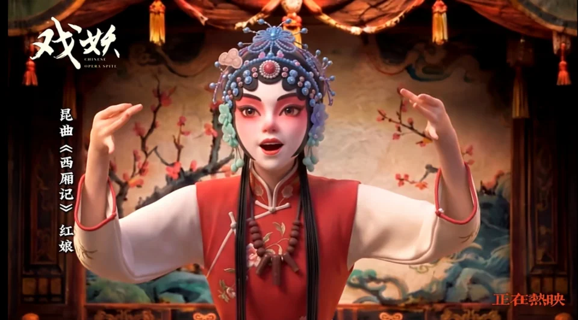
《戏妖》也希望让戏曲以一种更自然的方式进入动画。戏曲元素会体现在人物身份、世界规则、表演、音乐和故事本身，让它成为这个奇幻世界真正能够运转起来的一部分。观众可以先因为三个妖怪的故事笑起来，再慢慢发现，那些唱腔、造型、舞台和传统文化的气韵，其实一直藏在他们身上，值得用心体会。
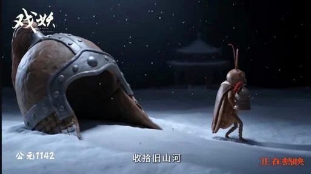
粘土画风
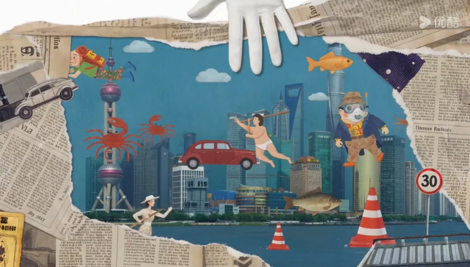
拼贴画风格
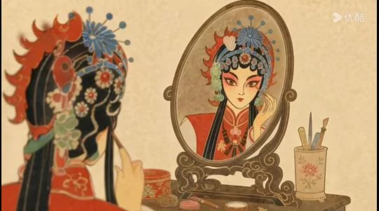
皮影画风
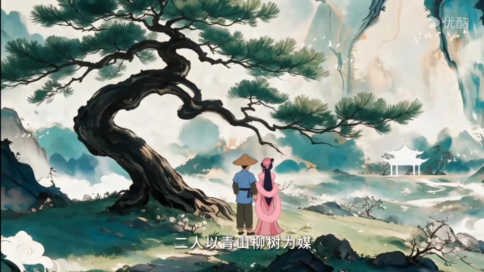
水墨画华丰
在视觉上，《戏妖》的主创团队也希望做出属于这个故事的“中国味道”。有熟悉的东方气质，也有鲜活的当代生活，我们使用多种风格的切换以保持画面的丰富性。这大概也是《戏妖》最想寻找的一种状态。希望传统文化出现在今天的作品里时，依旧鲜活好看、妙趣盎然，保有生生不息的力量；期盼那些历经岁月沉淀的文化技艺，以全新的面貌与年轻观众相逢相知；更期许打造一部深植中国审美、饱含中式故事意趣，真正立足当下时代的原创动画。
优酷播放界面：
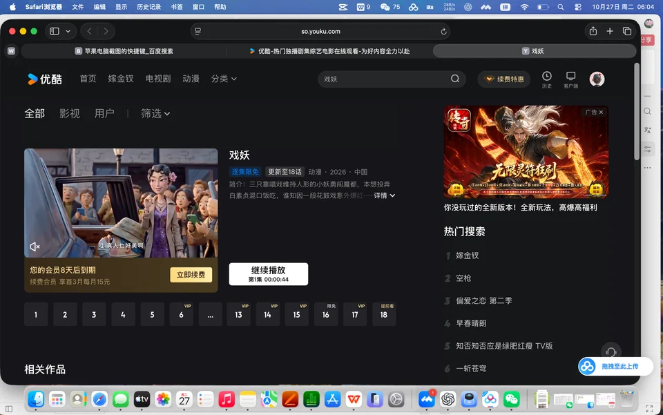
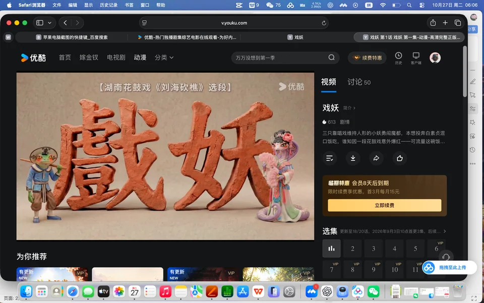
优酷跳转链接：
作品海报
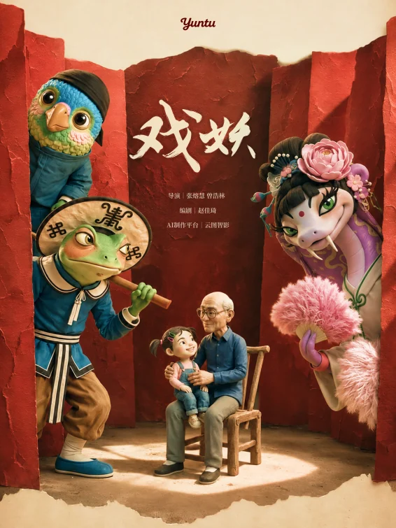
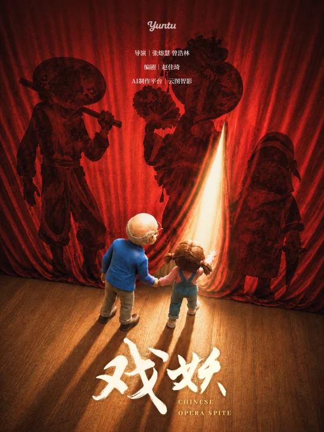
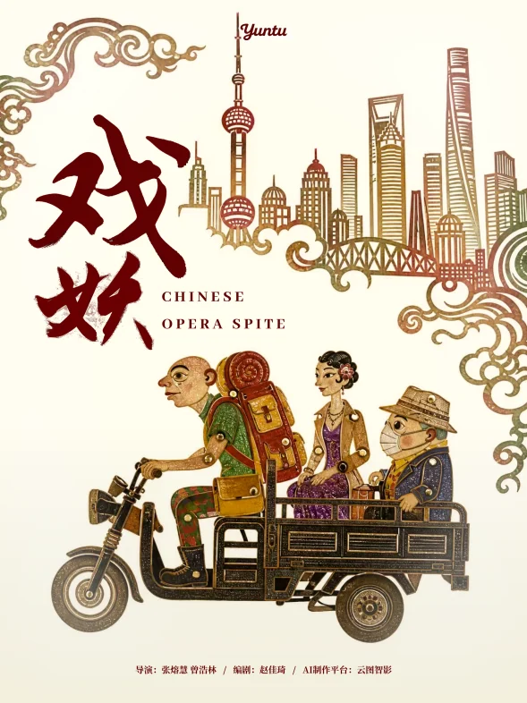
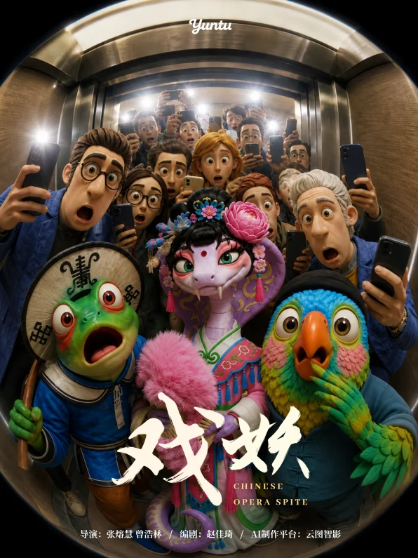
戏妖入围奖项：
《戏妖》获奖：
1、云图AI新锐导演计划——上海电影学院AIGC限时创作赛一等奖
2、入围2026年未来电影节AI短片单元(公开组)决赛
3、余杭数字文化大赛入围总决赛
4、参与金海豚奖AI短片+AI漫剧赛道
5、入围2026金鸡电影AI单元
6、参与2026年中国金鸡百花电影节·影动未来”系列活动
7、参与“浙里微光·文脉视听”2026钱塘杯AIGC大赛
8、参与2026金鸡AI影展(暨AIGC未来影像)
9、参与虎鲸文娱“鲸锐AI创作大赛
10、参与第七届国际科创节暨2026Al+应用大会
故事梗概：
戏妖由千年戏曲气韵孕育而生，人类越关注戏曲，它们妖力越强；戏曲衰落，戏妖便会退化。花鼓戏妖老蛙、小紫、鹦子因鹦子逐渐显露鸟形，离开乡村来到魔都寻找能维系人形的纯粹“韵”，并在白素贞帮助下重启废弃的149号戏院，如何在魔都让戏活起来成了三位戏妖的头等大事。
、
戏妖官方宣传账号：
6..相关报道
1.上影集团报道：https://mp.weixin.qq.com/s/zTBrvdVhmpVy1IiCQzLgvw
2.优酷官方报道：https://weixin.qq.com/sph/AXYWqf5k6G
3.上海电影学院报道：https://mp.weixin.qq.com/s/hfRNtJ2NeFvlA0PBZy1Lhg
4.云图智影报道：https://mp.weixin.qq.com/s/hdO7yJKFFiu2FIwzMCccEw
5.上海普陀报道：https://mp.weixin.qq.com/s/9l7cn_0o9I62jhaiDOuVhA